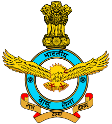

INDIAN AIR FORCE
The Indian Air Force (IAF) is the air arm of the Indian Armed Forces. Its complement of personnel and aircraft assets ranks fourth amongst the air forces of the world. Its primary mission is to secure Indian airspace and to conduct aerial warfare during armed conflict. It was officially established on 8 October 1932 as an auxiliary air force of the British Empire which honoured India's aviation service during World War II with the prefix Royal. After India gained independence from the United Kingdom in 1947, the name Royal Indian Air Force was kept and served in the name of Dominion of India. With the government's transition to a Republic in 1950, the prefix Royal was removed.
Since 1950 the IAF has been involved in four wars with neighbouring Pakistan and one with the People's Republic of China. Other major operations undertaken by the IAF include Operation Vijay, Operation Meghdoot, Operation Cactus and Operation Poomalai. The IAF's mission expands beyond engagement with hostile forces, with the IAF participating in United Nations peacekeeping missions.
IAF today is the fourth largest air force in the world. It is among the world’s top ten countries in terms of defense expenditure and third-largest importer of defense hardware. IAF is focusing on the procurement of long range, lethal and precision guided munitions, reconnaissance, surveillance and target acquisition system.
INDIAN AIR FORCE CREST
Crests have been used for the purpose of recognition and distinguishing formations or Units. They are symbols and source of inspiration and encouragement for the soldiers. The Air Force has adopted various crests for the commands, Squardron and the other establishments. The Crests in the Indian Air Force comprises of a standard frame. The central portion of the frame contains the individual formation sign with a motto shown in the scroll at the foot of the frame. The unit sign is drawn inside a circle of 3 inches diameter. The name of the formation of the units is shown in the upper half of the circle while Bhartiya Vayu Sena inscribed in the lower half. The crest and the motto are designed based on the role of the formation. The Crest is approved by the President of India and is of great historical and sentimental value. The Crest is normally presented by the AOsC-in-C at ceremonial parades. The importance of the crest can be understood from the fact that the movement of the crest from one place to other is done only by hand of an officer.
INDIAN AIR FORCE MOTTO
The Motto of Indian Air Force has been taken from eleventh chapter of the Gita, the Discourse given by Lord Krishna to Arjuna on the battlefield of Kurukshetra during the Great War of Mahabharata. The Lord is showing His Supreme Divine form to Arjuna and the great form of the Lord is reaching the sky with glory, evoking fear and loss of self-control in the mind of Arjuna. The Indian Air Force, similarly, aims to overwhelm the adversaries with application of aerospace power in defence of the nation.
INDIAN AIR FORCE FLAG
The Air Force ensign, different from the Air Force Colours, is blue in colour, containing the National Flag in the first quadrant and a roundel consisting of the colours of the National Flag i.e. saffron, white and green in the centre. This ensign was adopted in 1951 .
INDIAN AIR FORCE SONG
MARSHAL OF THE INDIAN AIR FORCE
MARSHAL OF THE INDIAN AIR FORCE ARJAN SINGH DFC
Marshal of the Indian Air Force Arjan Singh DFC, known for his Professional Competence, Leadership and Strategic vision, is a colossus in the IAF.
Arjan Singh was born on 15 April 1919 and since his early days as a student, he has been an achiever. An ace swimmer, he held an all-India record in free style swimming in one mile and half mile events. Arjan Singh was 19 years of age when he was selected for training at RAF Cranwell in 1938. He topped the course among his batch of Indian Cadets He was the vice captain of swimming, athletics and hockey teams during his training at Royal Air Force College Cranwell.
For displaying outstanding leadership, great skill and courage in Burma Campaign during World War II. He was awarded the Distinguished Flying Cross (DFC) in 1944.
Beginning Aug 1945, Wg Cdr Arjan Singh was selected to undergo the RAF Staff college at Bracknell in the UK.
On 15 Aug 1947, he had the unique honour of leading the flypast of over a hundred IAF aircraft over the Red Fort and on the same day, he assumed the command of Air Force Station, Ambala in the rank of Group Captain.
In addition to the high standards of Arjan Singh set in flying and training, he stabilised the administration, with a fair hand and enabled it to recover from the triple shock of demobilisation, partition of the country and the Air Force, and communal riots of unprecedented scale.
In 1949, Air Commodore Arjan Singh took over as the Air Officer Commanding of Operational command, which later came to be known as Western Air Command. Arjan Singh had the distinction of having the longest tenure as the AOC of Operation Command, from 1949-1952 and again from 1957-1961. Promoted to Air Vice Marshal, he was the AOC-in-C of Operation command. Towards the end of the 1962 war, he was appointed the DCAS and became the VCAS in 1963. He was the overall commander of the joint air training exercises “Shiksha” held between the IAF, RAF and RAAF thus laying the foundation of acquisition of new RADAR systems for IAF and training of IAF officers in USA for advanced gunnery course. He was also instrumental in planning and setting up of Armament Training Wing at Jamnagar, and later the Air Force Academy in 1967.
As Chief of Air Staff, Air Marshal Arjan Singh led the IAF in the 1965 War against Pakistan, wherein the IAF was able to blunt the Pakistani armoured thrust at Chamb, gained air superiority over the PAF and helped the Indian Army score Strategic victories.
Arjan Singh was awarded the Padma Vibhushan for leading Indian Air Force during 1965 war. Subsequently, in recognition of the Air Force’s contribution in the war, the rank of CAS was upgraded to that of Air Chief Marshal and Arjan Singh became the first Air Chief Marshal of the Indian Air Force. On completion of five years as the Chief of the Air Staff in two ranks, Arjan Singh retired on 16 Jul 1969.
In his career, Arjan Singh flew more than 60 different types of aircraft ranging from Pre World War II era bi planes to the supersonic MIG-21. He flew his first solo on MIG-21 as Chief of the Air Staff and remained a flyer to the end of his tenure in the IAF, visiting forward squadrons & units and flying with them.
In 1971, Arjan Singh was appointed as India’s Ambassador to Switzerland. Three years later, he was appointed as the country’s High Commissioner to Kenya. He also served as a member of the minorities commission in 1978 and later, as the Chairman of Indian Institute of Technology in New Delhi, an Institute of great repute, which he served with great distinction till 1983. In 1989, he was appointed the Lt Governor of Delhi.
Arjan Singh has remained a source of inspiration to fellow Indians and Officers. His simple formula for success is summed up in a few words by him.
Firstly, you should be thorough in your profession of everyone;
Secondly, complete the job at hand to the satisfaction of everyone;
Thirdly, you must have implicit faith in your subordinates;
And fourthly, your efforts should always be honest and sincere.
YB Chavan, Defence minister of India during the 1965 war described him as the jewel of a person, quietly efficient and firm, unexcitable but a very able leader.
After retiring from the IAF, Arjan Singh remained active and supportive of various causes for the welfare of air force veterans. Towards this end, he set up a trust in 2004 by contributing Twenty million rupees from his personal wealth to it.
On 17 April 2007, Dr Manmohan Singh, Prime Minister of India, wrote to Arjan Singh and honoured him as Marshal of the IAF and mentioned that the nation looked up to him as a source of continuing inspiration, wisdom and strength to the Indian Armed Forces.
Marshal of the IAF Arjan Singh passed away on 16 Sep 2017. His dynamic personality, professional competence, honesty of purpose in his service to the IAF and the country truly sets him apart as a leader and an icon of the Indian Air Force.
CHIEF OF THE AIR STAFF
AIR CHIEF MARSHAL RAKESH KUMAR SINGH BHADAURIA PVSM AVSM VM ADC

Air Chief Marshal Rakesh Kumar Singh Bhadauria PVSM AVSM VM ADC took over as the Chief of the Air Staff on 30 September 2019. An alumnus of the prestigious National Defence Academy, he graduated from the Air Force Academy with the coveted ‘Sword of Honour’ and was commissioned in the fighter stream of Indian Air Force on 15 June 1980.
He has over 4270 hours of experience on twenty seven types of fighters as well as transport aircraft and holds the unique distinction of being an Experimental Test Pilot, a Cat 'A' Qualified Flying Instructor and a Pilot Attack Instructor. He completed his Masters in Defence Studies from Command and Staff College, Bangladesh.
During his illustrious career, spanning almost four decades, the Air Chief Marshal has held a number of significant field and staff appointments which include Command of a front line Jaguar Squadron, Command of a premier Air Force Station in South-Western sector, Commanding Officer of Flight Test Squadron at Aircraft & System Testing Establishment and Chief Test Pilot as well as Project Director of National Flight Test Centre on Tejas Light Combat Aircraft (LCA) project. He was extensively involved in the initial prototype flight testing on the LCA. He has tenanted the appointments of Air Attaché Moscow, Assistant Chief of the Air Staff (Projects), Commandant National Defence Academy, Senior Air Staff Officer at Central Air Command, Deputy Chief of the Air Staff, Air Officer Commanding-in-Chief of Southern Air Command and Air Officer Commanding-in-Chief of Training Command. Prior to taking over as the Chief of the Air Staff, he held the appointment of the Vice Chief of the Air Staff.
In recognition of his meritorious service the Air Chief Marshal has been awarded the Vayu Sena Medal (VM) in 2002, Ati Vishist Seva Medal (AVSM) in 2013 and Param Vishist Seva Medal (PVSM) in 2018. He was appointed as Principal Honorary ADC to the President of India on 01 October 2019.
He is married to Mrs Asha Bhadauria and the couple is blessed with a daughter Sonali and a son Saurav.